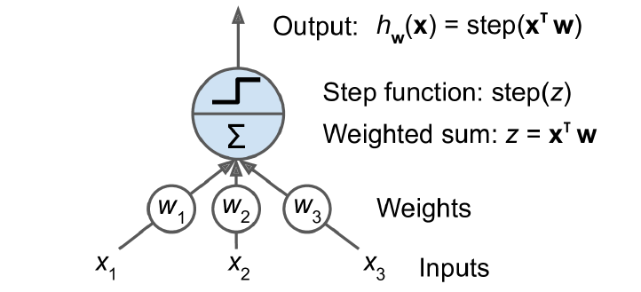
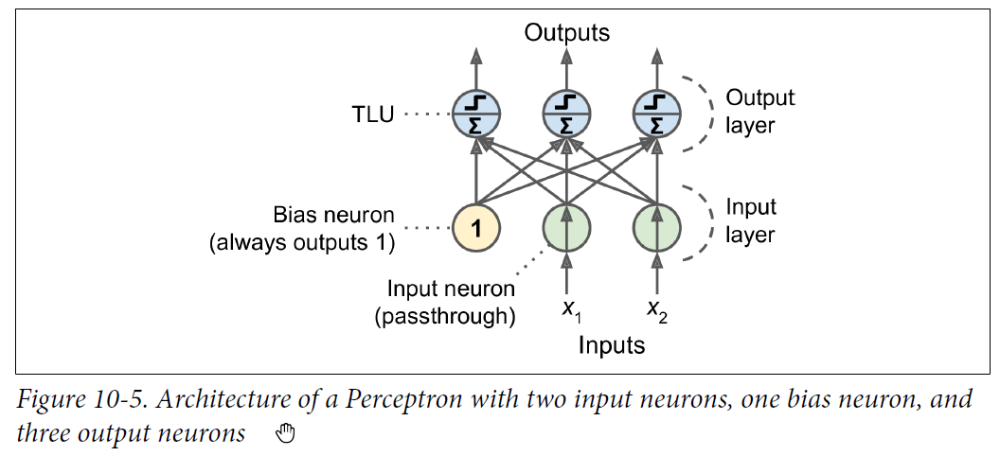
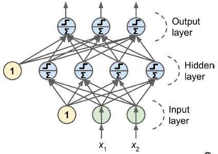
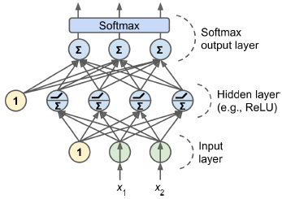
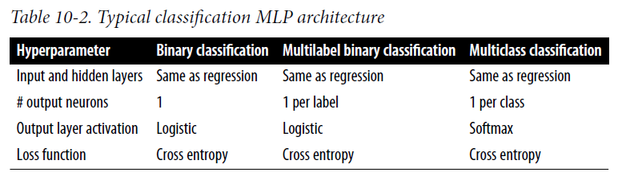

1. Multi Layer Perceptron
1.1. Perceptron
It is one of the simplest ANN architectures.
1.1.1. TLU
A TLU is a threshold logical unit. Logic as below: -
- Compute the weighted sum of its inputs i.e. $z = w_1 x_1 + w_2 x_2 + ... + w_n x_n$ or $z = W\intercal X$
- Apply a step function that outputs the result i.e. $h(x) = step(z) $
- The most common step function is the heavy side step function. (Basically its a binary classifier and predicts
0if $h(x) < 0$ or1if $h(x) >= 1$. You can also use any other threshold other than 0 if required.
- The most common step function is the heavy side step function. (Basically its a binary classifier and predicts

1.1.2. Perceptron
A perceptron is combination of multiple TLU but single layer.

You can compute the output of a fully connected layer easily.
$$ h(X) = \phi(XW + b) $$
- $\phi$ is the activation function
- $b$ is the bias
- $X$ is the input features
- $W$ is the weights
Perceptron will update its weights using the rule shown below
$$w_{new} = w_{current} + \alpha(y_j - \hat{y}_j)x $$
Because the decision boundary of each output neuron is linear, so perceptrons cannot learn complex patterns.
Remember (Note)
Remember that a linear model is one which has it weights as linear, even though the input parameter could be polynomial. Example below : -
$$y = w_0 + w_1 x_1 + w_2 x_2 + w_3 x_1^2$$
The model is considered to be non linear when the weights are non linear as shown below: -
$$y = w_0 + w_1 x_1 + w_2 x_2 + w_1 w_2 x_3$$
Code Sample
sklearn provides a Perceptron class that implements a single-TLU network.
from sklearn.linear_model import Perceptron
Scikit-Learn’s Perceptron class is equivalent to using an SGDClassifier with the following hyperparameters: loss="perceptron", learning_rate="constant", eta0=1 (the learning rate), and penalty=None i.e. no regularization.
1.2. Multilayer Perceptron

The MLP is composed of an input layer, one or more layers of TLU (hidden layers), and final output layer of TLU. When we have many many hidden layers it is considered a deep neural network.
1.2.1. BackPropogation
Autodiff : A lot of frameworks provide the functionality of autodiff which computes the gradient automatically.
Back propogation algorithm summary : the backpropagation algorithm first makes a prediction (forward pass) and measures the error, then goes through each layer in reverse to measure the error contribution from each connection (reverse pass), and finally tweaks the connection weights to reduce the error (Gradient Descent step).
Random Initialization : It is important to initialize all the layer weights randomly.
1.2.2. Step Functions
Choice of step functions include the following : -
- Sigmoid
- Hyperbolic tangent
- ReLU
1.2.3. Cost functions
Choice of cost functions
- Mean Squared Error
- Mean absolute error (if you have lots of outliers)
- Huber loss (combination of the above 2)
1.2.4. MLP for regression
MLP can be used for regression, in this case do not apply the activation function to the output layer. The MLP can provide single value as well as multiple values (e.g. coordinate values for x, y and z). If the MLP has to provide multiple values as outputs it needs multiple output neurons.
model = keras.models.Sequential([
keras.layers.Dense(30, activation="relu", input_shape=x_train.shape[1:]),
keras.layers.Dense(1) # No activation function on last layer for regression.
])
model.compile(loss="mean_squared_error", optimizer="sgd")
model.fit(x_train, y_train, epochs=20, validation_data = (x_valid, y_valid))
1.2.5. MLP for classification
MLP can also be used for classification, for binary output you need just a single neuron using logistic activation function. For multilabel classification you would need more than 1 neuron.
If the classification has to be 1 of many (i.e. multiclass classification), then you can add softmax function which will ensure all the probability are between 0 and 1 and add upto 1.


model = keras.models.Sequential()
model.add(keras.layers.Flatten(input_shape = [28,28]))
model.add(keras.layers.Dense(300, activation = 'relu'))
model.add(keras.layers.Dense(100, activation="relu"))
model.add(keras.layers.Dense(10, activation="softmax"))
model.compile(loss="sparse_categorical_crossentropy", optimizer = "sgd", metrics=["accuracy"])
model.fit(x_train, y_train, epochs=30, validation_data=(x_valid, y_valid))
You can check or enquire about the model as below: -
General info about the model
model.summary()
# Will return the layers of the model
model.layers
# Get the weights for hidden layer 1
hidden1.get_weights()
# Evaluating the model
model.evaluate(x_test, y_test)